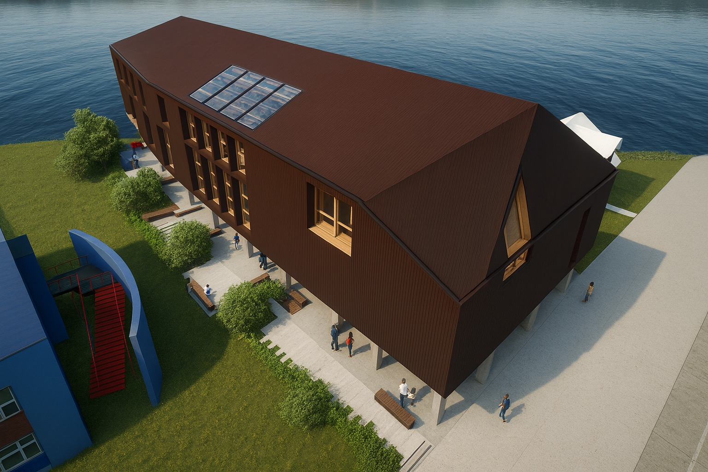
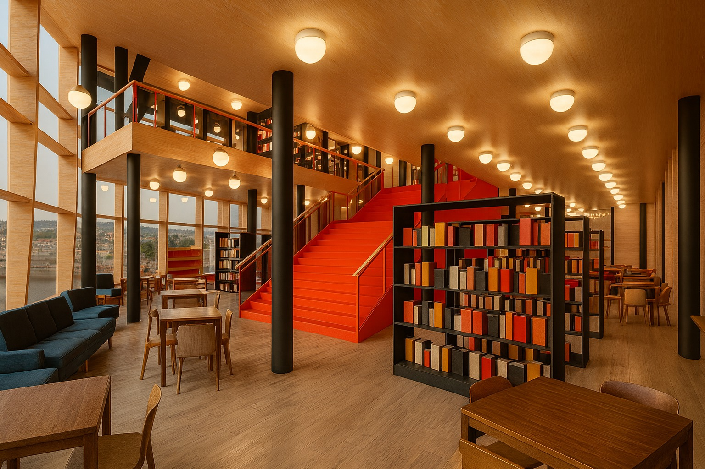
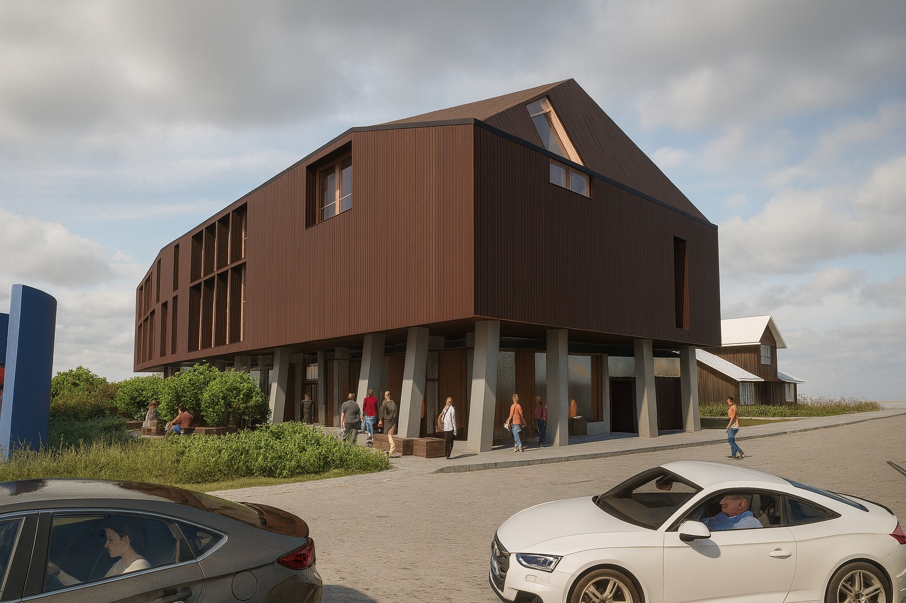
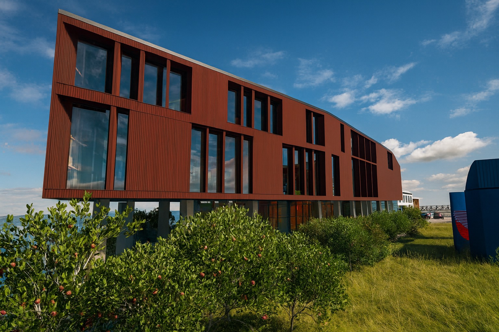
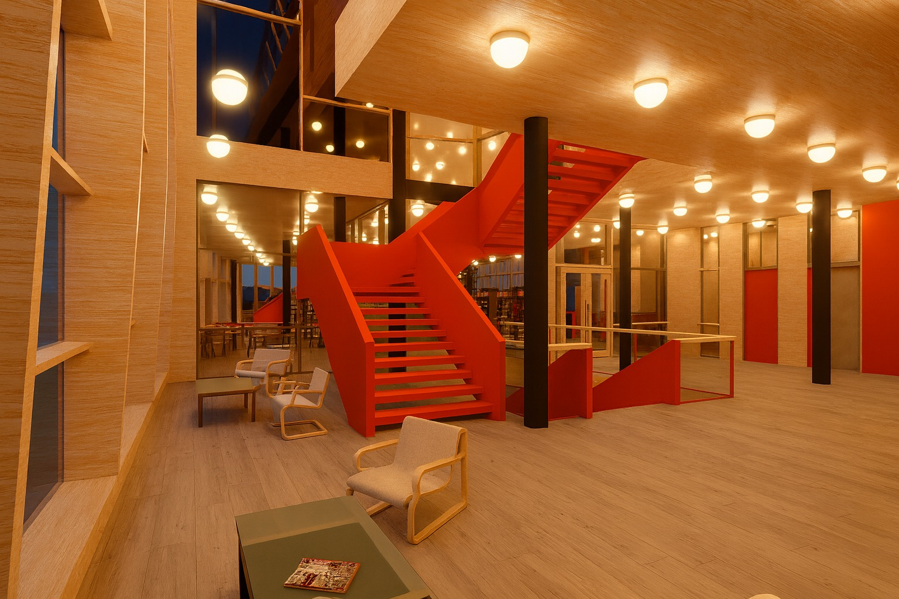
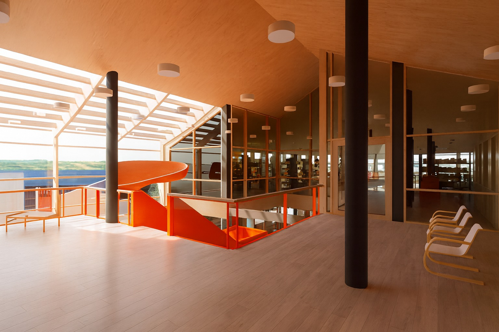
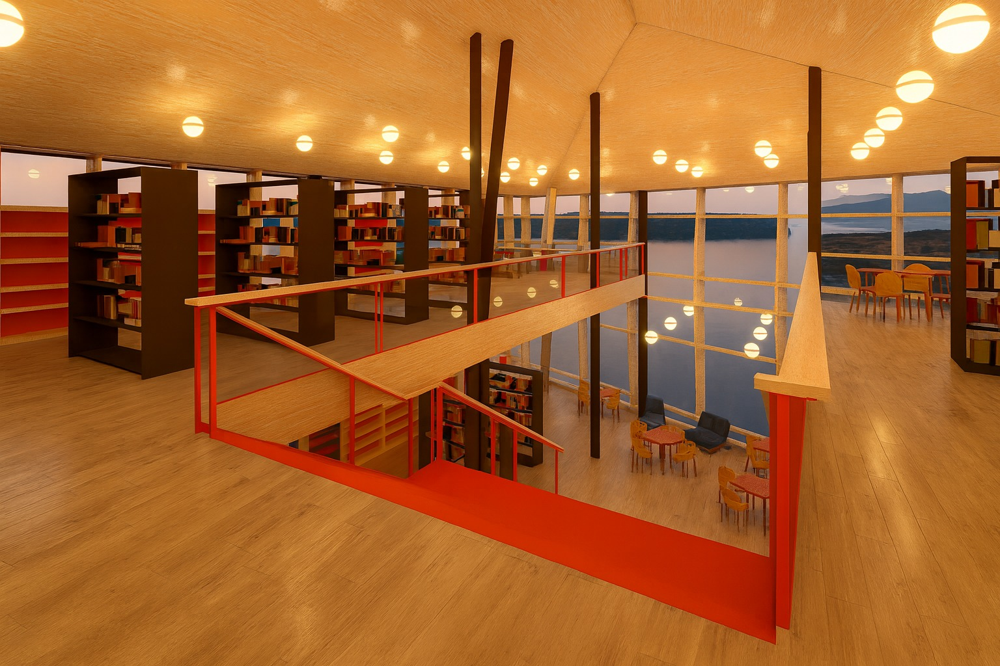

Museo Municipal
- Conservación de colecciones
- Investigación y memoria local
- Exposiciones permanentes
- Educación patrimonial
- Atención de visitantes

Imagen referencial del proyectoPostulación a etapa de ejecución · BIP 40005957-0
Un nuevo equipamiento cultural para Castro requiere asegurar hoy su futura operación.
01 · La etapa
02 · Integración
Un único equipamiento cultural municipal.

Imagen referencial del proyecto03 · El edificio





04 · La demanda
La reposición no parte desde cero: fortalece instituciones que ya atienden a la comunidad.
05 · El modelo
cargos. La dotación responde al funcionamiento integrado del museo y la biblioteca, no solo a la administración del inmueble.
06 · El porqué
En un museo y una biblioteca, reducir indiscriminadamente los costos de operación puede significar cerrar espacios o deteriorar las colecciones.
07 · La mantención
La mantención preventiva cuesta menos que reparar un edificio deteriorado o recuperar patrimonio dañado.
08 · El compromiso solicitado
Costo estimado de operación y mantención del futuro Museo Municipal y Biblioteca Pública de Castro.
Promedio mensual estimado: $35.498.667 (monto anual ÷ 12, solo referencial).
09 · La distribución
13 cargos para operar el museo y la biblioteca: dirección, atención de público, bibliotecarios, curador, especialista infantil, biblioredes y coordinaciones transversales. Financiados íntegramente con recursos municipales.
10 · Lectura financiera
Monto que la Municipalidad respalda para garantizar el funcionamiento.
Proyección por entradas y otros ingresos del modelo de gestión.
Arriendo del inmueble que hoy ocupa el Museo Municipal.
Los ingresos proyectados y el arriendo evitado son antecedentes complementarios; no alteran el monto formal que debe comprometer el Concejo.
El acuerdo municipal entrega certeza financiera al proyecto; los ingresos y ahorros reducen luego la presión efectiva sobre el presupuesto.
11 · La consecuencia
Acuerdo del Honorable Concejo Municipal
Se solicita al Honorable Concejo Municipal aprobar el compromiso de financiamiento anual necesario para la futura operación y mantención del proyecto “Reposición Museo Municipal y Biblioteca Pública, Castro”.
El acuerdo permitirá acreditar ante la entidad financiadora que la Municipalidad de Castro posee la capacidad institucional y presupuestaria para poner en funcionamiento el inmueble una vez ejecutado.
Aprobar este compromiso no financia solamente un edificio. Permite que el edificio pueda abrir, atender, conservar y permanecer.